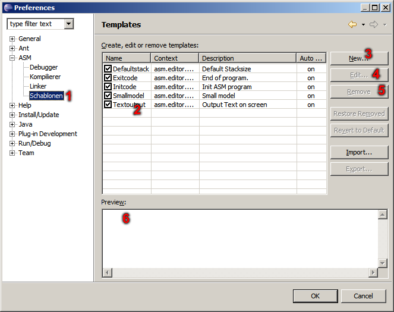

ASM Plug-In - Template-Preferences
In this dialog the set different templates. A template contains codesnipe. You can call with [CTRL]+[SPACE] in editor.

- Selection for template preferences.
- List of all templates.
- Add a new template.
- Edit selected template.
- Remove selected template.
- Preview of selected template.